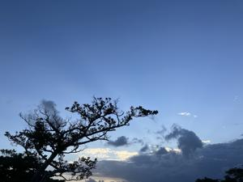
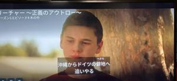

うるがいの話 ある日
最新: オクマビーチ【うるがいの話 ある日】とは 一日だけのプログです
『うるがいの話』の最新一日だけのプログで、通信料が少なく経済的だ。カニの画像をクリックすると全ての日付が載る『うるがいの話』サイトを表示します
|
|
【うるがいの話】 うるがい(ｳﾙｶﾞｲ urugai)とは、『もずくがに』の名前でとても大きくなります。 |
|---|---|
|
|
【カミマヤーの話】 猫のことを方言でマヤーといいます。カミマヤー（kamimayaa）とは、神の猫のことです。 |
|
【たながぁの音楽】 たながぁ（ﾀﾅｶﾞｰ tanagaa）とは手長えびのことで、何種類かあり大きいのは車 エビぐらいになります。 |

|
【ぶながぁの話】 ぶながぁ(ﾌﾞﾅｶﾞｰ bunagaa)とは、赤い髪の毛、赤い身体、そして身長は１ｍ２０ｃｍ ぐらい、川の蟹を食べているの目撃された。場所は沖縄県国頭郡大宜味村のと ある村僕の隣近所に住んでいる爺さんから、聞いた話です。 |
|
|
【ギーマの話】 ギーマ(giima)とは、山原の里山に咲くスズランに似た、 花を付けます。実は食べられます、 気が付くと口の周りが紫になっています。 |
2024年10月14日 (月）オクマビーチ
15:35

プライムビデオでドラマシリーズ『ジャック・リーチャー ～正義のア
ウトロー』を見てた。親が米軍に勤務している主人公が、彼のせいで沖
縄へ父親が移動させられるかもと言うシーンがあった。ホー、米軍の基
地で沖縄勤務は普通なのだろうと。

その昔、道路沿いの護岸からオクマビーチの綺麗な夜景を眺めていた。
ボイス・オブ・アメリカ（ＶＯＡ）の施設が、オクマビーチ（国頭村奥
間）にあった。今は、米軍保養施設が残っているだけだが。ユーチュー
ブ動画で、イーグルスのホテル・カリフォルニアを作成、ん、カルフォ
ルニア？、どこかで聞いたことがある。オクマの米軍保養施設は軍の郵
便局が割り当てた住所は、カリフォルニア州だと。多分、ホテルもある
のだろう。せっかくなので、ユーチューブ動画をば。
『イーグルス ホテル カリフォルニア 三線』６分３５秒
https://youtu.be/ZNCNn_6_Tks
私が生きている間に、オクマの米軍保養施設が返還されることはないか
な。
１５時２８分 ビットコインの総資産 ￥２７、６１３（↑３５３）